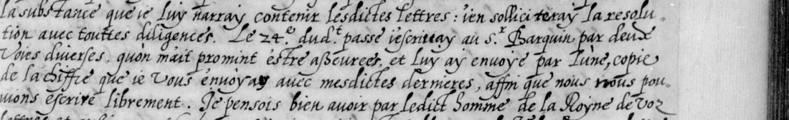
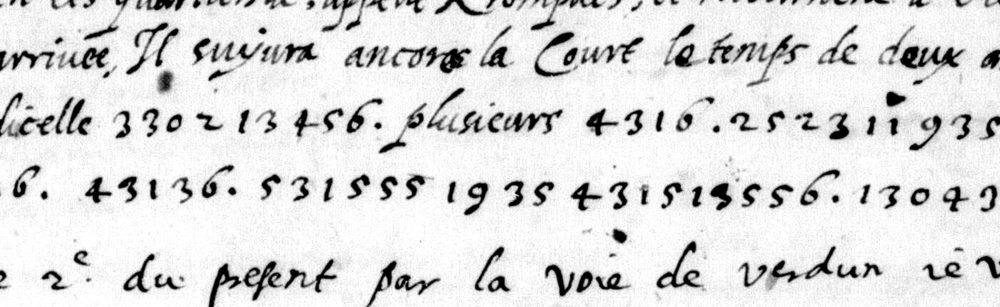

At a glanceCiphertext-only break · 534 of 536 cipher tokens
- The letters
- Desiderio l’Abbé, Nevers’s agent at the imperial court, to Louis de Gonzague, duke of Nevers: Prague, 2 March 1577, and Breslau, 2 May 1577 (two copies).
- Where
- Bibliothèque nationale de France, français 3198 nos. 30, 37 and 38 (Gallica views 63–66, 77–79). No DECODE record is known.
- The cipher
- Figures inside clear French. Vowels are one-figure numbers with a second form in the teens (e = 1 or 11, o = 5 or 15); consonants are two-figure groups; 6 is the word space and is followed by a point.
- How it was broken
- AngusRobinson guessed that three similar figure strings were l’empereur, and built the key from there (pull request #20). Here the key was checked against the manuscript images, against this project’s earlier transcription, and with a shuffle control.
- What it says
- Polish and Hungarian court politics: Warszewicki, Zborowski, Báthory, a marriage in Hungary, the royal title, the Turk, a new election. In May: of Weber, “many would not weep if he never came back.”
- Still open
- Two figures under blots, restored from context.
- Credit
- Key and decipherment: AngusRobinson. Images, earlier transcription, clear-text reading and verification: Daniel Bourdeau with Claude.
01 Two letters, three witnesses
| Document | Images | Cipher |
|---|---|---|
| No. 30, Prague, 2 March 1577 | Gallica views 63–66 | 29 runs, 491 tokens |
| No. 37, Breslau, 2 May 1577 | Views 77–78 | Two runs around the clear word plusieurs |
| No. 38, second copy of the May letter | Views 78–79 | The same two runs; 45 tokens in all for May |
The letters are mostly clear French. The cipher covers names and the more sensitive judgements, usually a few words at a time. On view 63 l’Abbé reports that on 24 February he sent a copy of “la chiffre” so that they could write freely; the key itself does not survive with the letters.

02 The key
| Letter | Figures | Letter | Figures | Letter | Figures |
|---|---|---|---|---|---|
| a | 02, 04 | h | 09 | q | 07 |
| b | 08 | i (j, y) | 3, 13 | r | 35 |
| c | 01 | l | 23 | s | 45 |
| d | 03 | m | 33 | t | 55 |
| e | 1, 11 | n | 43 | u (v) | 9, 19 |
| f | 21 | o | 5, 15 | x | 8, 18 |
| g | 31 | p | 25 | z | 29 |
| 6 = word space (written with a point after it); w is written uu | |||||
The leading zero matters: 03 is d, 3 is i. The figures are written run together, so the reader has to divide them; the word-space sign and the vowel pattern make this unambiguous in practice. The 23 September attempt had noticed the “marks after figures ending in 6” but had not read them as spaces.
03 Prague, 2 March 1577
Each run is given with a few words of the clear text around it (from the project’s inventory) and its decipherment. Spelling as in the cipher.
| Run | Clear text before | Deciphered |
|---|---|---|
| f63r01 | Monsieur le Nonce … | mondeui (Vincenzo Lauro, bishop of Mondovì, nuncio in Poland) |
| f64r01 | grandement … | hai de tous |
| f64r02 | bien des … | sboroschi (Zborowski) |
| f64r03 | pour son grand … | o[r]gueil (one figure blotted) |
| f64r04 | qui gouverne le tout … | donne parolle |
| f64r05 | comme j’ay hier entendu du … | seigneur uuarsauicio |
| f64r06 | a la dicte diete … | pour uoir de trou[u]er moien que |
| f64r07 | Les affaires de … | dansqui saccordassent (Danzig) |
| f64r08 | pouvant estre la ruine du … | reau[l]me et de chrestiente (one figure blotted) |
| f64r09 | Ledict … | uuarsauicio |
| f65r01 | lesquelles comme j’entend … | dudict uuasauuicio |
| f65r02 | que ledict Becques … | puisse prendre femme en hongrie |
| f65r03 | et pour aussi entendre … | si lempereur |
| f65r04 | baillera audict Batory … | titre de roi |
| f65r05 | pour envoyer … | uers sa maieste un |
| f65r06 | qu’il soit … | ami de ceste maison |
| f65r07 | sera pour celluy … | du turc |
| f65r08 | avec tous les moyens possibles … | auoir paix |
| f65r09 | l’opinion de … | ferdinand empereur |
| f65r10 | entendre estre … | le uueber et le trautzen (Weber and Trautson) |
| f65r11 | les Polonois … | sont diuises |
| f65r12 | et iacoit qu’ilz … | monstrent bon uisage au batori aux coeurs est le contraire |
| f65r13 | non seulement dudict … | uuarsauicio |
| f65r14 | ledict … | uuarsauicio |
| f65r15 | serviteur de … | lempereur |
| f65r16 | affaires de … | moscouiu et de pologne (Moscovie, a slip) |
| f65r17 | lequel faict la court … | aux florentins |
| f66v01 | et ledict Wastauicio … | aux sauoiens |
| f66v02 | en cas … | de nouuelle election |
The most connected passage is f65r11–12: “les Polonois sont divisés … et jaçoit qu’ilz monstrent bon visage au Batory, aux cœurs est le contraire” — the Poles are divided, and though they show Báthory a good face, in their hearts it is the opposite. Uuarsauicio is written in clear nearby as Wastauicio; it is probably Krzysztof Warszewicki, but the identification has not been checked.
04 Breslau, 2 May 1577
After reporting that Dr Weber has given up his office, the letter says he will follow the court two more years “pour estre receu aux affaires d’icelle,” and goes on in cipher:
mais plusieurs ne pleureroient s’il n’y retournoit jamais.
“But many would not weep if he never came back.” The word plusieurs is in clear between the two runs.

33 02 13 45 6. mais, clear plusieurs, then 43 1 6. 25 23 11 9 35 1 35 15 3 11 43 55 6. ne pleureroient. Image: Bibliothèque nationale de France, français 3198 no. 37, Gallica view 77.The two copies agree except for one pair: no. 37 writes 53 15 where no. 38 has 35 15. No. 38 gives retournoit, so no. 37’s figures are a copying slip.
05 How the result was checked
- Decoding. Each of the 31 token lines in the contribution decodes with the stated key to the stated text, with no disagreement.
- Transcription. The project’s own draft of the figures, made on 23 September before any key was known, agrees with the contributor’s figure streams in 897 of 914 figures (98.1%). Where they differ, the contributor’s figures make sense.
- Images. Five lines were re-read at full resolution: both May lines on views 77 and 79, and three lines on view 65 (le uueber et le, sont diuises, monstrent bon uisage au batori). All match.
- Shuffle control. Scored with the project’s French model of 16th-century despatches, the decipherment scores −2.500 per character. The same figures under 1,000 shuffled keys score −8.137 on average (s.d. 0.469, best −6.738), twelve standard deviations lower.
- History. The names fit the clear text: the nuncio in Poland, Zborowski, Báthory, Danzig, Weber and Trautson, the last two also named in clear in the May letter.
- Prior reading. None found on Cryptiana, on DECODE or on the web, on 23 September and again on 7 October 2026.
Measured on the decipherment file: 534 of 536 cipher tokens are deciphered (99.6%), word spaces included.
06 What remains uncertain
- f64r03 and f64r08: one figure each lies under a blot. Restored from context as orgueil and reaulme (grade C).
- f64r06 trouer is the writer’s slip for trouver; f65r01 uuasauuicio and f65r16 moscouiu are likewise slips in the cipher. They are deciphered, not open.
- The identification of uuarsauicio with Warszewicki, and the clear-text transcription around the runs, are provisional.
07 Sources
- BnF français 3198, Gallica: view 63, 64, 65, 66, 77, 79; catalogue.
- Key and decipherment: AngusRobinson, pull request #20 (
KEY_AND_DECRYPTION.txt,SOLUTION.txt). - Check:
decode_pr20.pyand its outputreading_pr20.txt; the earlier attempt inREASSESSMENT.md.
Key, decipherment, checks and the earlier attempt: repository folder.